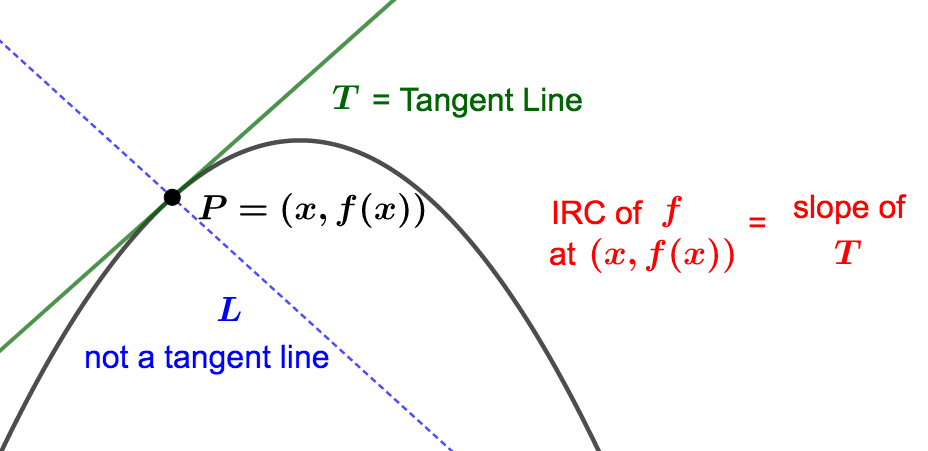
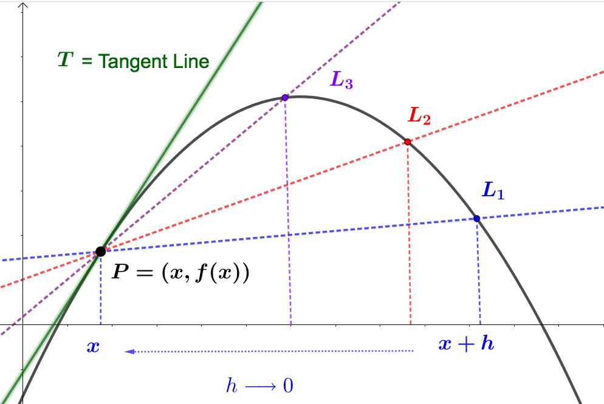
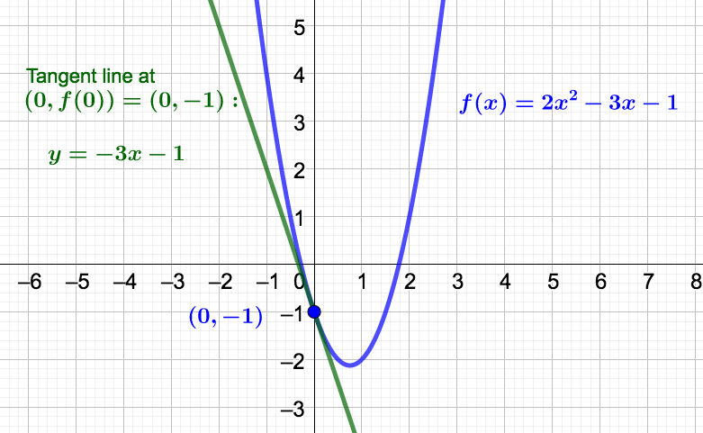

Section 3.3 Instantaneous Rate Of Change and the Derivative
As mentioned before, the concept of slope of a line and rate of change are equivalent (\(\Delta y\) by \(\Delta x\)). The instantaneous rate of change (IROC) of a function \(f\) at a fixed value \(x\) is the same as the slope of the tangent line at the point \(P=(x,f(x))\text{.}\) Let's call this line \(T\text{.}\) This line \(T\) ``touches" the graph of \(f\) at the point \(P\) and has the same ``direction" as the graph at the point \(P\text{.}\)

Notice how similar the graph of \(f\) and the graph of \(T\) are NEAR the point \(P\text{.}\) Because they are so similar, we can use the slope of \(T\) (which is the IROC of \(f\) at \(x\)) to approximate how \(f\) will increase or decrease as \(x\) increases by one unit. :
To find the slope of the tangent line \(T\) at the point \(P= (x,f(x))\text{,}\) let \(L_1\) be the secant line through the points \((x,f(x))\) and \((x+h,f(x+h))\text{.}\) Let's suppose \(h > 0\text{.}\) Keep making \(h\) smaller and smaller and smaller and smaller (that is, let \(h \rightarrow 0\)), and each time you pick a smaller value for \(h\text{,}\) draw another secant line through \((x,f(x))\) and \((x+h,f(x+h))\text{.}\) You will end up with infinitely many secant lines (one for each value of \(h\)) that get closer and closer to having the slope of the tangent line. Look at the picture below, where only three of these lines are drawn. Starting at \(L_1\text{,}\) \(h\) was made smaller to get to \(L_2\text{,}\) and then smaller still to get to \(L_3\text{.}\) Notice how these lines approach the tangent line \(T\text{.}\)

Each one of these secant lines has slope
\begin{equation*}
m_L = \dfrac{f(x+h) - f(x)}{h}
\end{equation*}
where \(h\) gets closer and closer and closer and closer (you get the idea) to 0. So, the slope of the tangent line, \(m_T\text{,}\) is found by taking a limit:
\begin{equation*}
m_T = \lim_{h \rightarrow 0} \dfrac{f(x+h)-f(x)}{h}
\end{equation*}
Remember this is also the IROC of \(f\) at \(x\text{.}\) That is,
\begin{equation*}
m_T = \lim_{h \rightarrow 0} \dfrac{f(x+h)-f(x)}{h} = \: \textrm{IROC of} \: f \: \textrm{at} \: x.
\end{equation*}
Definition 3.3.1.
The derivative of the function \(f(x)\text{,}\) denoted as \(f'(x)\) or \(\dfrac{df}{dx}\text{,}\) is given by
\begin{equation*}
f'(x) = \dfrac{df}{dx} = \lim_{h \rightarrow 0} \dfrac{f(x+h)-f(x)}{h}
\end{equation*}
provided the limit exists. If the limit does not exits, we say \(f\) is non-differentiable at \(x\text{.}\)
So, if \(f\) has a derivative at a fixed value \(x_0\text{,}\) then
\begin{equation*}
f'(x_0) = \lim_{h \rightarrow 0} \dfrac{f(x_0+h)-f(x_0)}{h} = \textrm{slope of tangent line at} \: (x_0,f(x_0)) =
\textrm{IROC of} \: f \: \textrm{at} \: x_0
\end{equation*}
A Comment About Notation:
Note that there are two forms of notation for the derivative: \(f'(x)\) (read ``\(f\) prime of \(x\)") is Sir Isaac Newton's notation and \(\dfrac{df}{dx}\) (read ``d \(f\) d \(x\)"; this is NOT a fraction) is Gottfried Leibniz's notation. They both represent the derivative defined above. You should become familiar working with both. We can also express the derivative as \(f'(x) = \dfrac{df}{dx} = \dfrac{d}{dx}(f(x))\text{.}\) For evaluation at \(x=c\text{,}\) we write \(f'(c)\) , or in case we're using Liebniz notation, we write \(\dfrac{df}{dx}\bigg|_{x=c}\text{.}\) The vertical bar is called an evaluation bar.
Our biggest application of the derivative will be its use as an IROC. In light of the discussion at the start of this section, for a fixed value of \(x_0\) in the domain of \(f\text{,}\) \(f'(x_0)\) gvies us an approximation of how \(f\) changes as the given \(x\)-value increases by one unit.
Example 3.3.2.
Suppe \(C(b)\) represent's ADTF Distributors' cost (in dollars) for \(b\) bookends produced and sold by the company. Interpret \(C'(123) = \dfrac{dC}{db}\bigg|_{b=123}= -7.30\text{.}\) Solution.Let's first assign units to this value. Since
\(C\) is cost given in dollars, and
\(b\) is bookends produced and sold, the units for the derivative are:
\begin{equation*}
$P'(123) = -7.30 \: \dfrac{\textrm{dollars}}{\textrm{bookend}}.
\end{equation*}
Since the value of the derivative is negative, the interpretation is:
When ADTF Distributors produces and sells \(b=123\) bookends, their cost is decreasing at a rate of \(\$ 7.30\) per additional bookend produced and sold. In other words, \(C'(123) = -7.30\) tells us that \(C\) will decrease by approximately \(\$7.30\) from production of the \(124^{\textrm{th}}\) bookend. Notice that the derivative, \(C'\text{,}\) gives us information about the original cost function, \(C\text{.}\)
Let's practice working with the definition of the derivative. When you are asked to find a derivative using the definition, this is the procedure to follow:
Example 3.3.3.
Find the derivative of the following functions using the definition of the derivative.
\(f(x) = 2x^2 - 3x -1 \) Solution.Let's first simplify the difference quotient. Most of the time, that just means simplify until you can cancel the
\(h\) in the denominator:
\begin{align*}
\dfrac{f(x+h) - f(x)}{h} \amp = \dfrac{2(x+h)^2 - 3(x+h) -1 - (2x^2 - 3x -1)}{h} \\
\amp = \dfrac{2x^2 + 4xh + 2h^2 - 3x - 3h -1 -2x^2 +3x +1}{h} \\
\amp = \dfrac{h(4x+2h-3)}{h} = 4x + 2h - 3
\end{align*}
Now, when we take the limit as
\(h\) goes to 0, we can just substitute 0 in for
\(h\) (since we can view the simplified difference quotient as a polynomial in
\(h\)). So,
\begin{align*}
f'(x) = \dfrac{df}{dx} \amp = \lim_{h \rightarrow 0}\dfrac{f(x+h) - f(x)}{h} = \lim_{h \rightarrow 0} (4x + 2h-3) \\
\amp = 4x + 2 \cdot 0 -3 = 4x - 3.
\end{align*}
That is, the derivative of
\(f(x)=2x^2 -3x -1\) is
\(f'(x) = \dfrac{df}{dx} = 4x - 3 \text{.}\)
\(g(t) = \dfrac{1}{t}\) Solution.Let's first simplify the difference quotient. Again, we will work until we can cancel the
\(h\) in the denominator of the difference quotient.
\begin{align*}
\dfrac{g(t+h) - g(t)}{h} \amp = \dfrac{\dfrac{1}{t+h} - \dfrac{1}{t}}{h} = \dfrac{\dfrac{t}{t(t+h)} - \dfrac{t+h}{t(t+h)}}{h} \\
\\
\amp = \dfrac{\dfrac{t-(t+h)}{t(t+h)}}{h} = \dfrac{-h}{th(t+h)} = -\dfrac{1}{t(t+h)}
\end{align*}
Now, when we take the limit as
\(h\) goes to 0, we can just substitute 0 in for
\(h\) (since we can view the simplified difference quotient as a rational function in
\(h\) for which
\(h=0\) is defined). So,
\begin{align*}
g'(t) \amp = \dfrac{dg}{dt} = \lim_{h \rightarrow 0}\dfrac{g(t+h) - g(t)}{h} = \lim_{h \rightarrow 0} \left(-\dfrac{1}{t(t+h)}\right) \\
\\
\amp = -\dfrac{1}{t(t+0)} = -\dfrac{1}{t^2}
\end{align*}
That is, the derivative of
\(g(t) = \dfrac{1}{t}\) is
\(g'(t) = \dfrac{dg}{dt} = -\dfrac{1}{t^2}\text{.}\)
Example 3.3.4.
Let \(f(x) = 2x^2 - 3x -1\text{.}\) Find and interpret \(f'(0)\text{.}\) Then find the tangent line to \(f(x)\) at \((0,f(0))\text{.}\) Solution.From the previous example, we know that
\(f'(x) = 4x-3\text{.}\) So,
\(f'(0) = -3\) which means: When
\(x=0\text{,}\) \(f(x)\) decreases at an approximate rate of 3 units per unit increase in
\(x\text{.}\) To find the tangent line, we need a point and a slope. Notice that we use \(f(x)\) fo find the point, and \(f'(x)\) fo find the slope.
A point is \((0,f(0)) = (0, 2(0^2) - 3(0)-1) = (0,-1)\)
slope = \(m = f'(0) = -3 \)
So, the tangent line is
\begin{align*}
y-y_1 \amp = m(x-x_1) \\
y-(-1) \amp = -3(x-0) \\
y \amp = -3x -1
\end{align*}
See the graph of
\(f(x)\) and it's tangent line at
\(x=0\) below.

Example 3.3.5.
A credit card statement contains information about the number of months it will take to pay off the card making the minimum monthly payment, and larger payments. Let \(M(p)\) be the number of months it takes to pay off the credit card making a payment of \(p\) dollars per month, where \(p\) is greater than or equal to the minimum monthly payment.
Wirte a sentence to interpret \(M(25) = 50\text{.}\)
What are the units for
\(M'(p)\text{?}\) Solution.
\(M\) is in months and \(p\) is dollars per month. So, the units for \(M'(p)\) are \(\dfrac{\textrm{months}}{\textrm{dollars per month}}\text{.}\)
Would you expect the sign of the derivative,
\(M'(p)\text{,}\) to be positive or negative?
Solution.Since \(M'(p)\) is the instantaneous rate of change of \(M\) (think of what happens to \(M\) as \(p\) increases by 1 unit), you would expect \(M'(p)\) to be negative since if you increase your payments by $1 per month, then the number of months it will take to pay off the card will decrease.
Interpret
\(M'(25) = -3\text{:}\) Solution.When the monthly payment is \(p=\$25\text{,}\) the number of months it will take to pay off the credit card is decreasing at an approximate rate of 3 months per additional dollar paid per month.